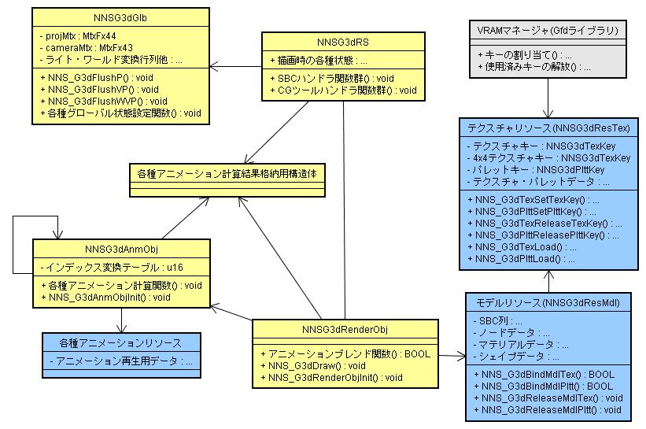

The following is the schematic diagram of major structures and functions. However, G3D is implemented in the C language, and it is not implemented as class or member functions.

(NNSG3dGlb)| NNS_G3dGlbInit | Initializes the global state kept in the G3D library. |
|---|---|
| NNS_G3dGlbFlushP | Sends the global state kept in the G3D library to the geometry engine. |
| NNS_G3dGlbFlushVP | Sends the global state kept in the G3D library to the geometry engine. |
| NNS_G3dGlbFlushWVP | Sends the global state kept in the G3D library to the geometry engine. |
| NNS_G3dGlbSetBaseScale | Configures the value in the base scale of the global state. |
| NNS_G3dGlbSetBaseRot | Configures the value in the base rotation of the global state. |
| NNS_G3dGlbSetBaseTrans | Configures the value in the base translation of the global state. |
| NNS_G3dGlbLightVector | Configures the directional vector of the light in the global state. |
| NNS_G3dGlbLightColor | Configures the light color in the global state. |
| NNS_G3dGlbMaterialColorDiffAmb | Configures the diffuse color and the ambient color of the material in the global state. |
| NNS_G3dGlbMaterialColorSpecEmi | Configures the specular color and the emission color of the material in the global state. |
| NNS_G3dGlbPolygonAttr | Configures the attribute value related to the polygon in the global state. |
| NNS_G3dGlbSetViewPort | Configures the viewport in the global state. |
| NNS_G3dGlbLookAt | Sets the camera matrix in the global state. |
| NNS_G3dGlbPerspective | Sets the transparency projection matrix in the global state. |
| NNS_G3dGlbFrustum | Sets the transparency projection matrix in the global state. |
| NNS_G3dGlbOrtho | Sets the orthographic projection matrix in the global state. |
| NNS_G3dGlbPerspectiveW | Sets the transparency projection matrix in the global state. (with scale W parameters) |
| NNS_G3dGlbFrustumW | Sets the transparency projection matrix in the global state. (with scale W parameters) |
| NNS_G3dGlbOrthoW | Sets the orthographic projection matrix in the global state. (with scale W parameters) |
| NNS_G3dGlbSetProjectionMtx | Sets the projective transformation matrix to the global state. |
| NNS_G3dGlbGetCameraMtx | Returns a pointer to the camera matrix that is set to the global state. |
| NNS_G3dGlbGetProjectionMtx | Returns a pointer to the projection matrix that is set to the global state. |
| NNS_G3dGlbGetBaseRot | Returns a pointer to the object rotation matrix that is set to the global state. |
| NNS_G3dGlbGetBaseTrans | Returns a pointer to the object translation vector that is set to the global state. |
| NNS_G3dGlbGetBaseScale | Returns a pointer of the object scale vector that is set to the global state. |
| NNS_G3dGlbGetCameraPos | Returns a pointer to the camera position vector that is set to the global state. |
| NNS_G3dGlbGetCameraUp | Returns a pointer to the upward vector for the camera. |
| NNS_G3dGlbGetCameraTarget | Returns a pointer to the camera's focal point vector that is set to the global state. |
| NNS_G3dGlbGetInvV | Returns a pointer to the inverse matrix of the camera matrix that is set to the global state. |
| NNS_G3dGlbGetInvW | Returns a pointer to the inverse matrix of the BaseSRT matrix that is set to the global state. |
| NNS_G3dGlbGetInvP | Returns the pointer to the inverse matrix of the projection matrix that is set to the global state. |
| NNS_G3dGlbGetWV | Returns the pointer to the matrix that is the BaseSRT matrix set to the global state multiplied by the camera matrix. |
| NNS_G3dGlbGetInvWV | Returns the pointer to the inverse matrix of the matrix that is the BaseSRT matrix set to the global state multiplied by the camera matrix. |
| NNS_G3dGlbGetInvVP | Returns pointer to the inverse matrix of the matrix that is the camera matrix set to the global state multiplied by the projection matrix. |
| NNS_G3dGlbGetViewPort | Gets the view port that is set to the global state. |
NNSG3dRenderObj, NNSG3dAnmObj, NNSG3dRedMdl, NNSG3dResTex, etc.)| NNS_G3dAnmObjInit | Initializes the NNSG3dAnmObj. |
|---|---|
| NNS_G3dAnmObjSetFrame | Configures the animation play frame of the AnmObj. |
| NNS_G3dAnmObjSetBlendRatio | Configures the animation blend ratio of the AnmObj. |
| NNS_G3dAnmObjGetNumFrame | Obtains the frame count of the animation that AnmObj references. |
| NNS_G3dAnmObjCalcSizeRequired | Returns the memory size needed by the NNSG3dAnmObj that corresponds to the designated model resource. |
| NNS_G3dAnmObjEnableID | Enables the animation of the specified node ID/material ID. |
| NNS_G3dAnmObjDisableID | Disables the animation of the specified node ID/material ID. |
| NNS_G3dRenderObjInit | Initializes the NNSG3dRenderObj. |
| NNS_G3dRenderObjGetResMdl | Gets the pointer to the model resource from the rendering object. |
| NNS_G3dRenderObjAddAnmObj | Appends the animation object (AnmObj) to the rendering object (RenderObj). |
| NNS_G3dRenderObjRemoveAnmObj | Removes the animation object (AnmObj) from the rendering object (RenderObj). |
| NNS_G3dRenderObjSetUserSbc | Registers the SBC (Structure Byte Code) specified by the user to the rendering object (RenderObj). |
| NNS_G3dRenderObjSetJntAnmBuffer | Registers the buffer for the joint animation in the rendering object (RenderObj). |
| NNS_G3dRenderObjSetMatAnmBuffer | Registers the buffer for the material animation in the rendering object (RenderObj). |
| NNS_G3dRenderObjReleaseJntAnmBuffer | Deallocates the buffer for the joint animation registered in rendering object (RenderObj). |
| NNS_G3dRenderObjReleaseMatAnmBuffer | Deallocates the buffer for the material animation registered in the rendering object (RenderObj). |
| NNS_G3dRenderObjSetCallBack | Registers the callback function that is called during the render process. |
| NNS_G3dRenderObjResetCallBack | Resets the callback function that is called during the render process. |
| NNS_G3dRenderObjSetInitFunc | Registers the callback function that is called before the render process. |
| NNS_G3dRenderObjSetUserPtr | Configures the pointer to the region that can be used on the callback process performed during the render process. |
| NNS_G3dRenderObjSetFlag | Sets what was designated by the execution control flag of the rendering object. |
| NNS_G3dRenderObjResetFlag | Resets what was designated by the execution control flag of the rendering object. |
| NNS_G3dRenderObjTestFlag | Tests whether or not the execution control flag of the rendering object has been set. |
| NNS_G3dRenderObjSetBlendFuncJnt | Sets the joint blend function to the rendering object. |
| NNS_G3dRenderObjSetBlendFuncMat | Sets the material blend function of the rendering object. |
| NNS_G3dRenderObjSetBlendFuncVis | Sets the visibility blend function of the rendering object. |
| NNS_G3dTexGetRequiredSize | Returns the size needed when storing the normal texture in VRAM. |
| NNS_G3dTex4x4GetRequiredSize | Returns the size needed when storing the 4 x 4 texel compression texture in VRAM. |
| NNS_G3dTexSetTexKey | Configures the texture key that indicates the memory used for storing the texture in the texture resource. |
| NNS_G3dTexLoad | Loads the texture to the VRAM region that the configured texture key indicates. |
| NNS_G3dTexReleaseTexKey | Releases the referenced texture. |
| NNS_G3dPlttGetRequiredSize | Returns the size needed when storing the palette to the VRAM. |
| NNS_G3dPlttSetPlttKey | Configures the palette key that indicates the memory needed to store the palette in the texture resource. |
| NNS_G3dPlttLoad | Loads the palette to the VRAM region that the configured palette key indicates. |
| NNS_G3dPlttReleasePlttKey | Releases the referenced palette. |
| NNS_G3dBindMdlTex | Binds the texture to the model. |
| NNS_G3dBindMdlTexEx | Binds the texture designated by the name to the model. |
| NNS_G3dForceBindMdlTex | Forcibly binds the texture designated by the index to the model. |
| NNS_G3dReleaseMdlTex | Releases the association to the texture entry of the material associated to the texture. |
| NNS_G3dReleaseMdlTexEx | Releases the association to the texture entry of the material associated to the texture that has the designated name. |
| NNS_G3dBindMdlPltt | Binds the palette to the model. |
| NNS_G3dBindMdlPlttEx | Binds the palette designated by the name to the model. |
| NNS_G3dForceBindMdlPltt | Forcibly binds the palette designated by the index to the model. |
| NNS_G3dReleaseMdlPltt | Releases the association to the palette entry of the material associated to the palette. |
| NNS_G3dReleaseMdlPlttEx | Releases the association to the palette entry of the material associated to the palette. |
| NNS_G3dBindMdlSet | Binds a texture and palette to each model in the model set. |
| NNS_G3dReleaseMdlSet | Releases the association of the texture and palette from each model in the model set. |
(NNSG3dRS, NNSG3dRenderObj)| NNS_G3dDraw | Renders the model. |
|---|---|
| NNS_G3dDraw1Mat1Shp | Draws a simple model quickly. |
| Global Variables | The global variable used at the time of rendering. |
| SBC and Callbacks | A description of the SBC (Structure Byte Code) and the callback |
| NNSG3dRS Structure and Access | A description of the structure and accessor function that manages the state at the time of rendering. |
| NNS_G3dGeIsSendDLBusy | Returns whether or not the GXDMA performed by the G3d library is transmitting. |
|---|---|
| NNS_G3dGeIsBufferExist | Returns whether or not the command buffer exists. |
| NNS_G3dGeIsImmOK | Returns whether or not it is OK to send the command directly to FIFO. |
| NNS_G3dGeIsBufferOK | Returns whether or not data can be appended to the command buffer. |
| NNS_G3dGeWaitSendDL | Waits until the transmission of the NNS_G3dGeSendDL() function finishes. |
| NNS_G3dGeSetBuffer | Sets the command buffer. |
| NNS_G3dGeReleaseBuffer | Safely releases the command buffer. |
| NNS_G3dGeFlushBuffer | Safely writes the contents of the command buffer to the geometry engine. |
| NNS_G3dGeSendDL | Safely writes the designated display list to the geometry engine. |
| NNS_G3dGeBufferOP_N | Efficiently writes the geometry command that has N arguments to the geometry engine. |
| Geometry Command Functions | The function group that issues the geometry commands via |
| NNS_G3dMdlUseGlbXXXXX | Sets so that the material setting set in the global state can be used for model rendering. |
|---|---|
| NNS_G3dMdlUseMdlXXXXX | Sets so that the material setting in the model resource can be used for model rendering. |
| NNS_G3dMdlSetMdlXXXXX | Sets the individual materials in the model resource. |
| NNS_G3dMdlGetMdlXXXXX | Gets the individual material settings in the model resource. |
| NNS_G3dMdlSetMdlXXXXXAll | Batch sets the materials in the model resource. |
| NNS_G3dGetAnmByIdx | Obtains a pointer to the animation resource from the animation resource file by specifying an index. |
|---|---|
| NNS_G3dGetAnmByName | Obtains a pointer to the animation resource from the animation resource file by specifying a resource name. |
| NNS_G3dInit | Initializes the G3d library. |
|---|---|
| NNS_G3dResDefaultSetup | Sets up the G3D resource. |
| NNS_G3dResDefaultRelease | Performs the necessary management processing before releasing the G3Dresource. |
| NNS_G3dGetResultMtx | Takes out the matrix from the matrix stack if the designated matrix remains in the matrix stack. |
| NNS_G3dSetResultMtx | Substitutes the designated matrix to the applicable position of the matrix stack. |
| NNS_G3dGetSbcCmdLen | Returns the length of the designated SBC command string. |
| NNS_G3dSearchSbcCmd | Searches for the designated SBC command from inside the SBC code string. |
| NNS_G3dGetParentNodeID | Gets the ID of the parent node of the designated node. |
| NNS_G3dGetChildNodeIDList | Creates the list that stored the ID of the child node of the designated node. |
| NNS_G3dGetCurrentMtx | Obtains the current location coordinate matrix and current directional vector matrix. |
| NNS_G3dLocalOriginToScrPos | Returns the location on the screen of the origin of the local coordinate system. |
| NNS_G3dWorldPosToScrPos | Returns the location on the screen of the coordinate of the world coordinate system. |
| NNS_G3dScrPosToWorldLine | Returns with the world coordinate system the points on the Near clip surface and Far clip surface corresponding to the position on the screen. |
| Resource Name Macro | This is the macro group for handling the resource names. |
| NNS_G3dGetResDataByName | Gets the pointer to the entry that corresponds to the resource name from the dictionary. |
|---|---|
| NNS_G3dGetResDictIdxByName | Gets the index that corresponds to the resource name from the dictionary. |
| NNS_G3dGetDataBlockHeaderByIdx | Gets the block header from the resource file. |
| NNS_G3dGetMdlSet | Gets the model set from the resource file. |
| NNS_G3dGetTex | Gets the texture resource from the resource file. |
| NNS_G3dGetMdlByIdx | Gets the model from the model set with the index. |
| NNS_G3dGetMdlByName | Gets the model from the model set with the resource name. |
| NNS_G3dGetMat | Gets the material from the model. |
| NNS_G3dGetShp | Gets the shape from the model. |
| NNS_G3dGetSbc | Gets the pointer to the SBC code string from the model. |
| NNS_G3dAllocRenderObj | Allocates the region for the rendering object from the heap region. |
|---|---|
| NNS_G3dFreeRenderObj | Deallocates the region allocated by the NNS_G3dAllocRenderObj function. |
| NNS_G3dAllocAnmObj | Allocates the region for the animation object from the heap region. |
| NNS_G3dFreeAnmObj | Deallocates the region allocated by the NNS_G3dAllocAnmObj function. |
| NNS_G3dAllocRecBufferJnt | Allocates the region for the joint record buffer from the heap region. |
| NNS_G3dFreeRecBufferJnt | Deallocates the region allocated by the NNS_G3dAllocRecBufferJnt function. |
| NNS_G3dAllocRecBufferMat | Allocates the region for the material record buffer from the heap region. |
| NNS_G3dFreeRecBufferMat | Deallocate the region allocated with the NNS_G3dAllocRecBufferMat function. |
| NNSG3dGlb | Structure for managing the color and direction of the camera matrix and light. |
| NNSG3dRenderObj | Structure for managing one model and multiple animations. |
| NNSG3dAnmObj | Structure holding data necessary for getting the necessary animation data from the animation resource. |
| NNSG3dRS | Structure holding the state during rendering. Refer to NNSG3dRS structure and accessor. |
| NNSG3dJntAnmResult | Structure for storing joint (animation) calculation results. |
| NNSG3dMatAnmResult | Structure for storing material (animation) calculation results. |
| NNSG3dVisAnmResult | Structure for storing visibility (animation) calculation results. |
| NNSG3dResMdl | Model resource structure in the .nsbmd file. |
| NNSG3dResTex | Texture resource structure in the .nsbmd file or the .nsbtx file. |
| NNSG3dSbcCallBackFunc | Type of callback function used when rendering. |
| NNSG3dFuncAnmJnt | Type of function that calculates joint animation. |
| NNSG3dFuncAnmMat | Type of function that calculates material animation. |
| NNSG3dFuncAnmVis | Type of function that calculates visibility animation. |
| NNSG3dFuncAnmBlendJnt | Type of function that that blends joint animation calculation results. |
| NNSG3dFuncAnmBlendMat | Type of function that blends material animation calculation results. |
| NNSG3dFuncAnmBlendVis | Type of function that blends visibility animation calculation results. |
| NNS_G3dFuncSbcTable | Table of function that processes SBC. |
| NNS_G3dFuncSbcMatTable | Function table for processing the NNS_G3D_SBC_MAT command for every data format. |
| NNS_G3dFuncSbcShpTable | Function table for processing the NNS_G3D_SBC_SHP command for every data format. |
| NNS_G3dAnmObjInitFuncArray | Function table where initialization function of the NNSG3dAnmObj structure corresponding to each animation format is stored. |